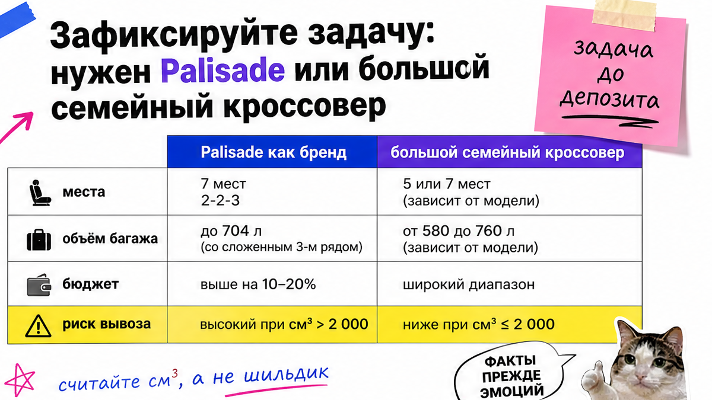
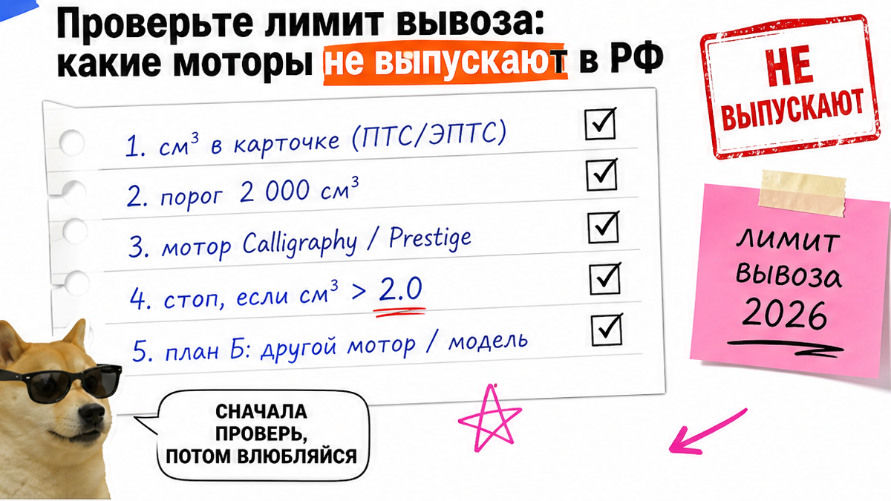
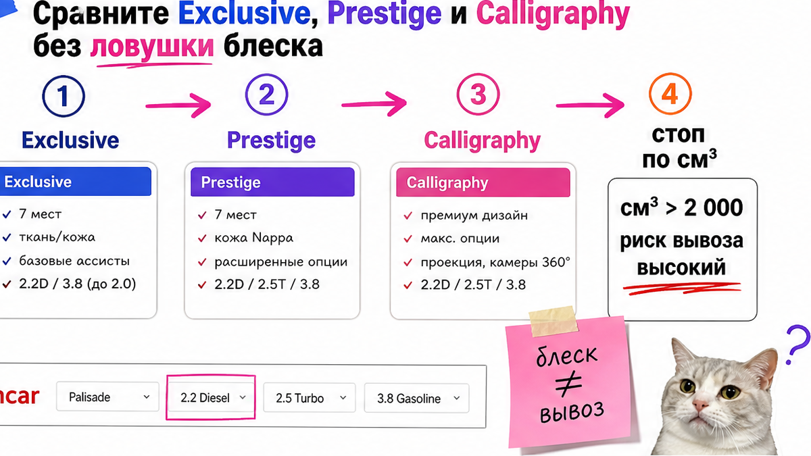

Семья уже почти перевела задаток за новый Palisade Calligraphy 2026 гибрид из Кореи через Казахстан: посредник говорит, что "все так возят". Боль простая и дорогая – вы хотите большой семейный хендай палисад из кореи, а почти все моторы больше 2,0 л и легально в РФ не выпускают; серые схемы через третьи страны ловят. Ниже – как до депозита сверить см³, пройти чеклист и выбрать легальный план Б.
TL;DR / Быстрый инсайт: С 24.02.2024 Корея ограничивает вывоз авто с объёмом больше 2 000 см³ в РФ и Беларусь. Новый Palisade – 2 497 см³ (бензин и гибрид), б/у LX2 с 2.2/3.5/3.8 тоже выше порога. До депозита сверьте см³, отсейте маршрут "через Казахстан", проверьте Encar и Carhistory, держите план Б: Carnival/Santa Fe Hybrid, японский 7-местный или уже растаможенный Palisade в РФ.
Мы в Авто-Сейлс во Владивостоке часто видим одну сцену: люди выбирают Calligraphy по фото, а не по паспорту мотора. Голос статьи – разговор до перевода денег. Без хвастовства комплектациями и без статичного калькулятора пошлин.
На практике сюрприз жёстче рекламы. Гибридный Palisade тоже не проходит: база всё равно 2,5 л. А Hyundai в Корее сам отменяет подозрительные сделки на Palisade, если видит риск вывоза за рубеж в обход контроля. Результат сегодня – не "купить любой ценой", а решение: этот лот не выходит / ищем легальную альтернативу.

Типичная ошибка – смешивать две цели. "Хочу именно Palisade Calligraphy" и "нужен спокойный 7–9-местный для семьи" – разные маршруты. Если важна модель, смотрите уже растаможенные в РФ. Если важны места без серых схем – сравните легальные альтернативы.
Сделайте короткое ТЗ: число мест, город/трасса, гибрид, готовность смотреть Японию или вторичку РФ. Не делайте депозит, пока в ТЗ нет строки "объём в см³ и законный вывоз". Так вы сможете отказать посреднику без FOMO.
Схема до денег:
Задача семьи → Объём в см³ → Лимит 2 000 → История лота → Серые стоп-сигналы → План Б → Депозит только при зелёном чеклисте

С февраля 2024 под контроль попали легковые авто с объёмом больше 2 000 см³ для РФ и Беларуси. "См³" – кубические сантиметры; на пальцах рекламные "2.5" почти всегда около 2 500 см³, то есть выше порога.
| Поколение / мотор | Объём (см³) | Прямой легальный вывоз в РФ |
|---|---|---|
| Новый LX3 2.5 turbo | 2 497 | Нет |
| Новый LX3 2.5 hybrid | 2 497 | Нет |
| Б/у LX2 2.2 diesel | 2 199 | Нет |
| Б/у LX2 3.5 / 3.8 | 3 470 / 3 778 | Нет |
Например, лот "новый гибрид Calligraphy" выглядит идеально, но паспорт 2 497 см³ ставит стоп. Сделайте запись объёма цифрами из карточки. Не делайте ставку на фразу "для гибридов исключения" – для Palisade её нет.
Для легальных корейских альтернатив есть второй потолок: льготный утильсбор в РФ завязан на мощность до 160 л.с. "Вывезли ≤2,0 л" ещё не значит "дешево растаможили". Суммы не фиксируем – расчёт только персонально в каталоге.

На рынке Кореи 2026: Exclusive – вход в богатый уровень, Prestige – середина, Calligraphy – верх. Ориентиры в вонах (Naver): около 45,10 / 50,93 / 57,87 млн ₩. У Calligraphy чаще Nappa, 21″, panoramic display, HUD – но это вторично, если машину нельзя вывезти.
Для РФ порядок другой: сначала объём и вывоз, потом комплектация. Выберите трим только после зелёного статуса по см³. Не делайте выбор "по блеску" до паспорта мотора.
Encar – корейская площадка объявлений с плотными отчётами. Carhistory – официальная страховая история по VIN: показывает выплаты, но не ремонт "мимо страховой". Encar진단 – диагностика состояния; окно компенсации ошибки 90 дней / 5 000 км – не индульгенция.
Проверьте историю сами или через человека, который читает корейские отчёты. Избегайте перевода "за бронь" без см³ и VIN. Ориентир: нет пакета – нет денег. Подбор и расчёт – в каталоге avto-sales125.ru; детали по лоту – в Telegram avtosales125.
"Через Казахстан же возят" в 2026 – риск, не лазейка. Весной 2026 корейская таможня усилила борьбу с реэкспортом: за 2023–2025 выявлено нарушений на ~179,6 млрд вон, наказание – до 7 лет или штраф до 5× стоимости. Типовые схемы: ложный destination (KZ/KG), занижение объёма, "новый как б/у".
В реальном проекте семьи достаточно было открыть паспорт 2 497 см³ и остановить перевод. Сделайте то же до эмоций. Не делайте ставку на устную гарантию – требуйте письменное основание; при отказе уходите.
Тупика нет. Легальная развилка по объёму ≤2,0 л: Kia Carnival Hybrid, Santa Fe Hybrid, Sorento Hybrid (вывоз по литражу обычно возможен, льготный утиль по мощности часто нет). Нужен именно Palisade – смотрите уже растаможенные в РФ. Нужен объём салона – сравните японские 7-местные вроде Delica D:5.
| Вариант | Когда брать | На что смотреть |
|---|---|---|
| Carnival / Santa Fe / Sorento Hybrid | Семья и легальный вывоз из Кореи | Объём ≤2,0 л; мощность vs утиль |
| Palisade уже в РФ | Нужна именно модель | Документы растаможки, история |
| Япония 7-мест | Важен объём салона | Аукционный лист, логистика |
Итоговый вердикт: Новый Palisade из Кореи "под ключ" в 2026 чаще всего легально не вывезешь. Если цель – семья на 7–9 мест, выберите Carnival/Santa Fe Hybrid или японский вариант и получите понятный маршрут без серой схемы.
Соберите shortlist из двух легальных моделей и одной вторички РФ. Используйте тот же чеклист объёма и документов.
Результат достигнут, когда вы открываете карточку, видите см³, отмечаете стоп-сигналы серой схемы и либо отказываетесь от депозита, либо выбираете легальную альтернативу без ощущения обмана на полпути.
Сделайте депозит только когда все пункты зелёные. Не делайте исключений "для срочности" – срочность без документов работает против покупателя.
Форм на странице нет: подбор живёт в каталоге и переписке. Так вы сохраняете контроль до первого перевода.
Материал проверен: Редакция Авто-Сейлс (эксперты по авто под заказ из Японии, Кореи и Китая).
Достоверность: факты сверены с Yonhap (лимит вывоза с 24.02.2024), каталогом Hyundai KR (2 497 см³, тримы Exclusive/Prestige/Calligraphy), Asiae/Korea Customs (рейды 2026, 179,6 млрд вон), Newspim (отмена выдачи Palisade), Carhistory и Encar진단; актуальные расчёты – в каталоге.
Прямой легальный вывоз почти всегда недоступен: моторы 2.5 turbo и hybrid – 2 497 см³ при пороге 2 000. Сделайте ставку на уже растаможенный в РФ экземпляр или легальную альтернативу, не на схему через третью страну.
Не проходят новый 2.5 (бензин и гибрид), б/у 2.2 diesel (2 199), 3.5 и 3.8. Проверьте см³ в карточке до депозита – если больше 2 000, лот непроходной без спецразрешения.
Calligraphy – верхний трим: богаче отделка, чаще 21″, панорамный дисплей, HUD. Prestige – середина. Для РФ сначала решите вывоз; иначе разница тримов не спасёт непроходной мотор.
Выпишите объём в см³, комплектацию, пробег, откройте диагностику и Carhistory по VIN. Не делайте перевод, пока история не сходится, а конечная страна в договоре не Россия.
В 2026 это высокий риск: контроль реэкспорта усилили, санкции жёсткие. Требуйте письменное основание вывоза; при давлении на депозит без документов – отказывайтесь.
Сравните Carnival Hybrid, Santa Fe/Sorento Hybrid, японские 7-местные или уже растаможенный Palisade в РФ. Выберите 2–3 варианта и запросите персональный расчёт.
Нет, пока не закрыт чеклист: см³, вывоз, история, договор. Если торопят без пакета – стоп-сигнал. Сначала факты, потом деньги.